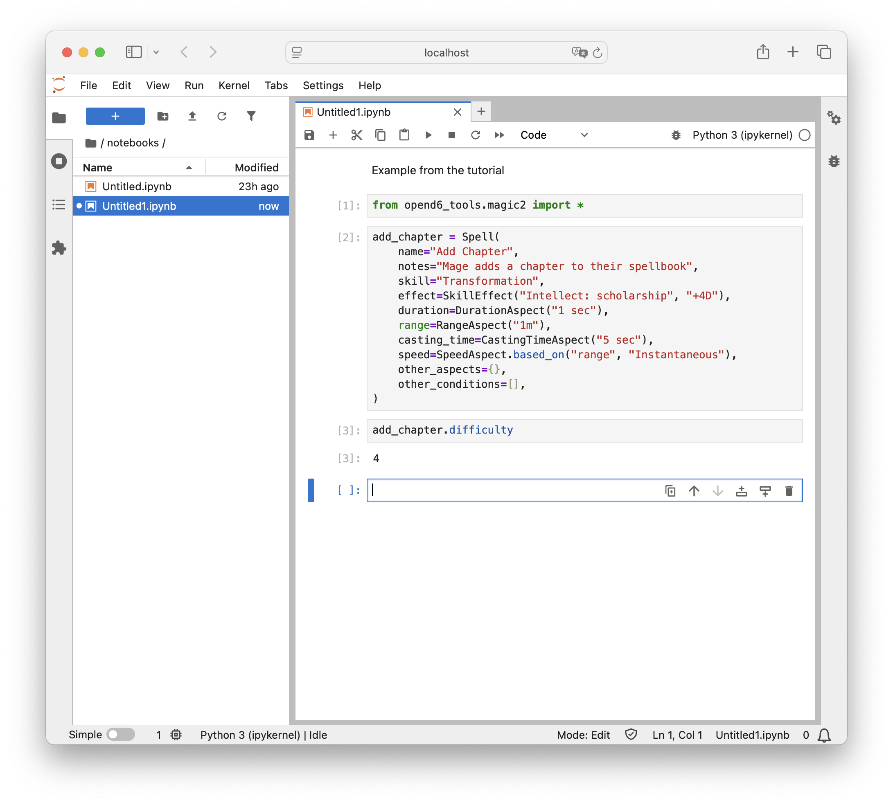

The Spell DSL¶
It’s time to look at how we can create a Magic chapter in our campaign document.
Once we have the new chapter, we need to start adding Spell definitions.
The steps in this tutorial will support the Change-Compute-Consider cycle. The Spell definitions use a DSL to support interactive computation. The DSL also supports document publication.
We’ll break this tutorial into several steps.
Adding a chapter for magic.
Writing a Spell in a Jupyter Notebook. This will have some background plus the details of putting a few lines of code into a Notebook.
Converting the Notebook to some RST that can be published. This is a multi-step process. We can do it manually, but, it’s done best by configuring the make tool. The idea is that any change made to the Notebook cascades into a change to the final document.
Including the Spell’s RST in the chapter.
Review: Adding a chapter¶
In the Start Writing part of the tutorial, we added some chapters. We’ll repeat the overview of the steps again because – for a lot of folks – this is a new and different way to write.
Create a new
.rstfile for the chapter. We might create a file namedmagic.rst.Put the title in the chapter. The first two lines of the
magic.rstfile can beMagic =====
Update the
.. toctree::directive inindex.rstto include the name of the new file. Just include the stem of the name,magicnot the entire name.
At this point, we can run the following make command to see the work in process:
make html
This will regenerate the HTML so we can be see our new, empty chapter.
Introduction to spell definition¶
The domain-specific language for spells uses Python syntax. Here’s an example.
from opend6.magic2 import *
example = Spell(
name="Example",
notes="Mage waves their hands and says the words",
skill="Transformation",
effect=SkillEffect("Acumen: testing", "+4D"),
duration=DurationAspect("1 sec"),
range=RangeAspect("1m"),
casting_time=CastingTimeAspect("5 sec"),
speed=SpeedAspect.based_on("range", "Instantaneous"),
other_aspects={},
other_conditions=[
GenericAspect(1, "Everything else is completed"),
],
)
(Yes, there’s a wee bit of redundancy here. It’s a bit annoying, but can be helpful for pinpointing errors.)
The from... line adds the Spell DSL to the names Python recognizes.
The tools need to see a Spell definition in an assignment statement.
A name = Spell(...) statement has a variable name, name, and an object definition, Spell(...).
The = is required.
The variable name is limited to letters, digits, and _, and it must start with a letter.
It can help to make the variable name an echo of the spell name.
Because Python variable names are constrained the variable name is unlikely to match the spell name.
Spell names can have spaces, variable names can’t; it’s common to use _ instead of spaces in the variable name.
For example, pass_wall = Spell(name="Pass Wall", ...).
The OpenD6 Rules list eight characteristics of a spell.
The DSL computes difficulty for us.
It also adds some additional characteristics.
Here’s a run-down of what a Spell can contain.
name=. The"characters are required around the name. In the unlikely event the spell name has a"character in it, use'apostrophe’s around the spell name instead of". In the really, really unlikely event the spell name has both"and'in it, use"""instead of single".notes=. If these are fit on one line, enclose the notes with"or'. (Use either one, but be consistent.) If the notes are more than one line long, use"""around the notes and write as much as you need to write.skill=should be the skill used. This is rarely more than a word or two, enclosed in"or'.effect=. This will use one of the definedEffect()objects. In this example, it’s aSkillEffect(). The others are named in the Using the OpenD6 Tools section of this documentation.Note the effect is broken into two clauses: a general description, and the specific die code to use. The descriptive text can be anything that clarifies this for your reader. The die code must follow narrow syntax rules:
+{n}*D,+{n}*D+{p}. For example4*Dor4*D+2. The*is required by Python. (As an alternative, drop the*, and enclose the value in quotes (either"or'.)duration=expects aDurationAspect()object. The value must be a number followed by a time unit; usually seconds, but a variety of common time period names are permitted here.range=expects aRangeAspect()object. The value must be a number followed by a distance unit; usually meters, but a variety of common distance names are permitted here.casting_time=expects aCastingTimeAspect()object. The rules are the same as for duration: a number and a time unit.speed=is frequently based on distance. When theSpeedAspectis based on the distance, the effect will be instantaneous. There’s no reason to manually assure the speed and distance match; the DSL usesSpeedAspect.based_on("range", ...)to make sure they match. Note the"around"range"; this is required.What’s important is that a misspelling will lead to peculiar-looking error messages. For example, using
based_on("rage", ...)won’t work because there is no"rage"attribute of a spell.The
other_aspects={}details any other aspects of the spell. The use of{}is Python syntax for a dictionary with words and objects.We might have
{"gestures", GesturesAspect(...)}to add gestures to a spell. The dictionary will have a well-known aspect name, like"gestures"and the associatedGesturesAspect()definition.If there are more than one, separate each
"name": Aspect()pair with,.The
other_conditions=[...]details any other conditions that constrain the spell. The use of[]is Python syntax for a simple list. These are oftenGenericAspect()definitions, with a specific difficulty and a descriptive text.If there are more than one, separate each
Aspect()with,.
The difficulty is conspicuously absent from a spell definition. It’s computed.
Step 1: Activate the virtual environment¶
Each time we sit down to a Terminal window (or Powershell prompt) we’ll need to make sure our virtual environment is active. The OS prompt should provide hints as to what environment is active. There are two parts to this:
The current working directory. The book directory,
campaign_bookneeds to be current. If the prompt doesn’t show the directory, there are OS commands to print the working directory:pwd(or Windowscd).If the directory isn’t correct, use the
cd(orchdir) command to navigate to the correct working directory.The virtual environment. If the prompt starts with
(my-book)then the virtual environment is active. Nothing more needs to be done.If the virtual environment isn’t active, use one of the following commands to activate it.
source .venv/bin/activate
For Windows the command is slightly different.
.venv\Scripts\Activate.ps1
The prompt will have a prefix of (my-book) as a reminder that the virtual environment is now active.
Step 2: Start a Spell Notebook¶
Look back at the OpenD6 Tools tutorial, for
If you have a starting notebook still open, close the open tab by clicking the × on the tab for the notebook.
Generally, we expect to be looking at a Launcher in the center panel.
If not, the big + button on the File Browser panel will create a Launcher panel.
In the center of the Launcher panel, under the “Notebook” banner, click the Python 3 (ipykernel) icon to create a new Notebook.
Do the following things in this notebook.
Change the first cell’s type from
CodetoMarkdown. Right click over the cell for a drop-down menu of things to change about a cell.In the Markdown cell, put in a summary of the notebook – something about an exercise to define a Spell and learn the Spell DSL.
Add a code cell. This will be cell #1. Write the following line of code in that cell.
from opend6_tools.magic2 import *
This will import the Spell-centric DSL to the notebook.
Add another code cell. This will be cell #2. Write the following Spell definitionin that cell.
add_chapter = Spell( name="Add Chapter", notes="Mage adds a chapter to their spellbook", skill="Transformation", effect=SkillEffect("Intellect: scholarship", "+4D"), duration=DurationAspect("1 sec"), range=RangeAspect("1m"), casting_time=CastingTimeAspect("5 sec"), speed=SpeedAspect.based_on("range", "Instantaneous"), other_aspects={}, other_conditions=[], )
Add code cell, to create cell #3. Put the following line of code in the cell to show the computed difficulty.
add_chapter.difficulty
Execute the cell with the icon at the top of the panel.
The result will be shown below the cell:
4is the difficulty.Here’s what the notebook looks like:

Jupyter Notebook with an example spell, “Add Chapter”.¶
It’s time to consider this spell and the overall campaign. Clearly, this spell is too easy, we need to make some changes.
{kind=link}
5. In the cell with the label [2], change the
duration=DurationAspect("1 sec"), clause of the definition.
Instead of
"1 sec", make it"1 hr".Execute cell
[2]with the icon at the top of the panel. This changes the definition.Note the cell number changes to
[4]. It’s the fourth computation.Execute cell
[3]with the icon at the top of the panel. This recomputes the difficulty. It also updates the cell number to[5]to show it’s the fifth computation.Yes, cells can be computed out of order. To keep things straight, it can help to rerun all of the cells in the notebook.
Change the duration to
"1 day".Execute the entire notebook using the icon at the top of the panel. Note the cell numbers all get reset into simple, ascending order from top to bottom.
And the difficulty jumped to a number that makes the spell much more challenging.
Be sure to rename the notebook to a valid name. (Use only ower-case letters, digits, and
_.) The rest of the tutorial assumes it’s calledexample_1. If you pick a more meaningful name, be sure to use the name you picked.Be sure to save the final version.
{kind=link}
We’ve made a few trips around the Change-Compute-Consider cycle.
Change the definition.
Compute the difficulty.
Consider the results in the context of world building, campaign, or scenario.
The computation is (almost) immediate and doesn’t require punching numbers into a calculator. Now that we’ve got a spell, we need to make two conversions to put this into our working book.
Step 3: Update the publication pipeline¶
There are several transformations that need be applied to our spell to make it ready for publication. The pipeline will have three stages in it.
Convert the Notebook to a Python module.
Run the Python module as an app to create a RST-format file that can be included into the final document.
As we’ve seen in previous parts of the tutorial, the final document is created by the Sphinx tool. It transforms the various document pieces from RST files to HTML (or PDF or EPUB.)
This forms a pipeline where our content flows through a number of transformation steps.
The pipeline is controlled by Sphinx’s Makefile.
When we enter the make html command, the make tool takes off and does what needs to be done to create the final document.
The make tool’s final step is to run sphinx-build to do the real work of transformation.
We will make a total of three separate changes to expand the publishing pipeline.
Update the Sphinx
Makefileto demand the conversion of spells into RST files. This will invoke a subsidiary make.Add a
spells/Makefileto provide a concrete implementation for steps 1 and 2, convert notebooks to modules, and convert modules to RST files.Update the
magic.rstdocument in our campaign book to use the.. include::directive to include the RST-format file with the spell details.
Step 3a – Update the Makefile¶
Open the Sphinx-supplied Makefile.
You’ll see something like this cryptic looking recipe definition around line 19:
%: Makefile
@$(SPHINXBUILD) -M $@ "$(SOURCEDIR)" "$(BUILDDIR)" $(SPHINXOPTS) $(O)
What does this recipe do? The %: means that this works for any target given on the command line (other than help).
(There’s a separate help recipe.)
This recipe has one command: $(SPHINXBUILD).
The value of the SPHINXBUILD variable is the actual sphinx-build command.
The parameter provided on the command line is the target name which will replace the $@.
Change the Makefile to add one new line, $(MAKE) -C spells in front of the $(SPHINXBUILD) line.
Makefiles have a special format where the indentation must be a “tab” character, not four spaces.
Python, on the other hand, can work with either one.
It should look like the following:
%: Makefile
$(MAKE) -C spells
@$(SPHINXBUILD) -M $@ "$(SOURCEDIR)" "$(BUILDDIR)" $(SPHINXOPTS) $(O)
The %: recipe now has two steps:
New new step runs
makewhile changing the working directory tospells. This will use theMakefileit finds in that directory.Run the original
$(SPHINXBUILD)command to create the final document.
There are two requirements for this recipe to work.
The project has a folder named
spells.The
spellsfolder has aMakefilein it.
We’ll take some additional steps to make sure these two requirements are satisfied.
Step 3b – add the spells/Makefile¶
The spells/Makefile is not terribly complicated.
It has a bunch of “boilerplate” – standard stuff that won’t change.
It has one line which will change as our document grows and evolves.
1.phony: spells
2
3vpath %.ipynb ../notebooks
4
5# Create a Python Spell module from a Jupyter Notebook with the same name.
6%.py : %.ipynb
7 python -m opend6_tools.notebook_extract spells $< > $@
8
9# Create an RST text file from a Python Spell module with the same name.
10%.txt : %.py
11 python $< display > $@
12
13spells : example_1.txt
This Makefile has four separate recipes, and one directive.
We’ll start at the top.
.phony: spellsis a special-purpose recipe to tell the make tool thespellstarget isn’t really a file.It’s a phony target name.
The
vpathdirective tells the make tool to search for.ipynbfiles in a../notebooksdirectory. The..means navigate to the parent of this directory.The
%.py : %.ipynbrecipe shows how to make a Python module (%.py) from a Notebook (%.ipynb). The use of%in the result and ingredient part of the recipe means the file stem remains constant. In other words,abc.pywill be created from../notebooks/abc.ipynb.The
%.txt : %.pyrecipe shows how to make an RST-formatted file (%.txt) from a Python module (%.py). The$<is the target module file; which will be executed as an application. The module will be given adisplayargument value, the output will be collected into the$@target file.The
spells : example_1.txtrecipe provides a concrete definition for the phonyspellstarget. This defines what will be done in response to themake spellscommand. This recipe states the phony target,spells, depends on a concrete file,example_1.txt.
What happens when the command make spells is run?
First, the spells phony target depends on a real file, example_1.txt. This becomes the goal for the make tool.
To satisfy this goal, the make tool will scan the recipes looking for a recipe to make the required file. It will discover the %.txt : %.py recipe.
This shows how to make an example_1.txt file from an example_1.py file.
This becomes a new goal.
The first time this is run, there’s no example_1.py, so make has to scan the recipes for a way to make the example_1.py file, and discover the %.py : %.ipynb recipe.
This shows how to make an example_1.py file from an example_1.ipynb notebook.
The source notebook can be found either in current directory (which will be spells) or – better – in the ../notebooks directory named in the vpath directive.
Since the notebooks/example_1.ipynb exists, the make tool knows what to do.
It will run the notebook_extract command.
It will then execute the module with the display argument to create the RST.
This example assumes the spell notebook will be named example_1.ipynb.
If the notebook has a different name, use the actual notebook name instead of example_1.ipynb.
The name’s stem has to be lowercase letters, digits, and _. The suffix has to be .ipynb.
The name claimed in the Makefile (example_1) needs to match the actual name the actual notebook actually has.
Important
.txt is the suffix for the RST-format file
The suffix of .txt is distinct from the .rst files we created by hand.
We use this suffix to make it invisible to the Sphinx tools.
It’s still RST-formatted spell details.
We want to use .rst for manually-created files because Sphinx will look around in the working directory to be sure all .rst files are part of the current project.
This helps locate spelling mistakes in the .. tocreee:: directives.
The spells : example_1.txt recipe will grow as we add new notebooks.
The rest of the file will remain unchanged.
As new notebooks are created, add the file names to the spells : recipe.
The names go at the end, separated from each other by at least one space.
Maybe this recipe will evolve to spells : example_1.txt rank_2.txt cantrips.txt to reflect three groups of spells.
The final step is to add an .. include:: directives in the magic.rst chapter of the campaign book.
Step 3b – include the spells RST file¶
In our magic.rst chapter, we might have some text like this.
Here's the list of spells:
.. include:: spells/example_1.txt
The .. include:: directive tells Sphinx to read the example_1.txt file here.
The RST-formatted version of the example_1.ipynb notebook will be included here in the document.
As noted above, if your actual notebook name is not example_1, change this to match your
actual notebook name.
Conclusion¶
We’ve added a section to our book. This section includes spell definitions, which means we’ve done a number of related things.
We’ve used a notebook to define the spell, and help us with the Change-Compute-Consider part of design.
We’ve updated the Sphinx
Makefileto build spells.We’ve create a
spells/Makefileto build RST-formatted files from the notebooks in which we put our ideas.
As important note is that we can have as many spells as we want in a single notebook. They will all wind up in a single RST-format file.
The notebook organization, then, must reflect the organization of the .. include:: directives in our book.
One master list of all spells? One big notebook and one big RST file will work.
Separate lists of spells based on skill used? This suggests one notebook for each skill area. This will create one RST-format file for each skill area. The final book, then, will have an
.. include::directive for each of these lists of spells.Separate lists of spells for each rank of difficulty? This, too, suggests one notebook for each rank. This will create one RST-format file for each rank. The final book, then, will have an
.. include::directive for each of these lists of spells.
As our thinking evolves, the file names will change.
This means changing the .. include:: directives, as well as the targets in the spells: `` recipe in the ``Makefile.
They RST documents and the Makefiles have to agree on the file names.
Now that we’ve seen how the Spell DSL works, we can move on to The Character DSL and define characters.